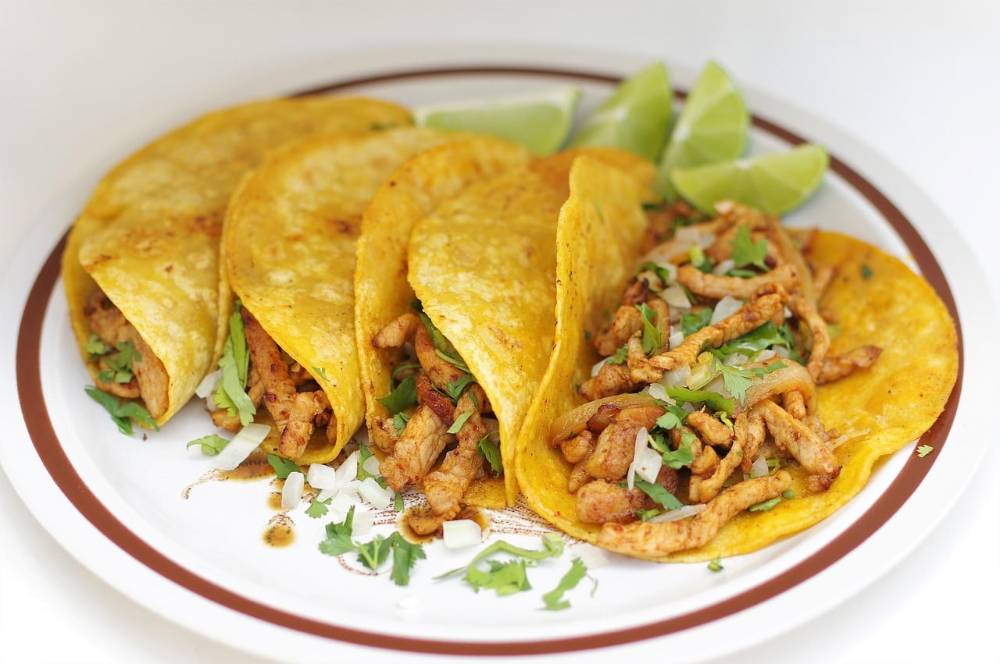
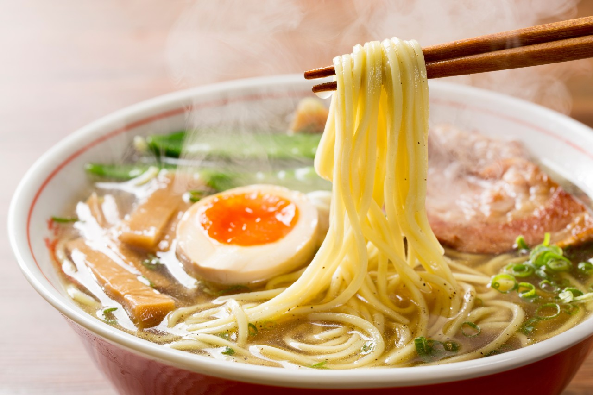
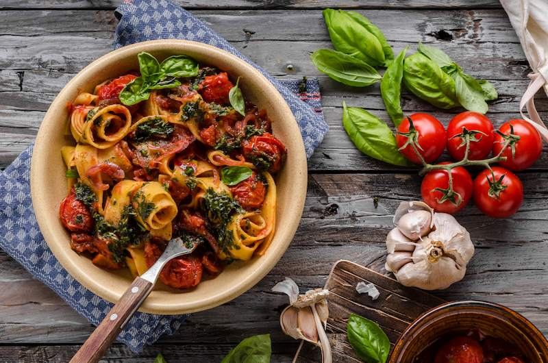
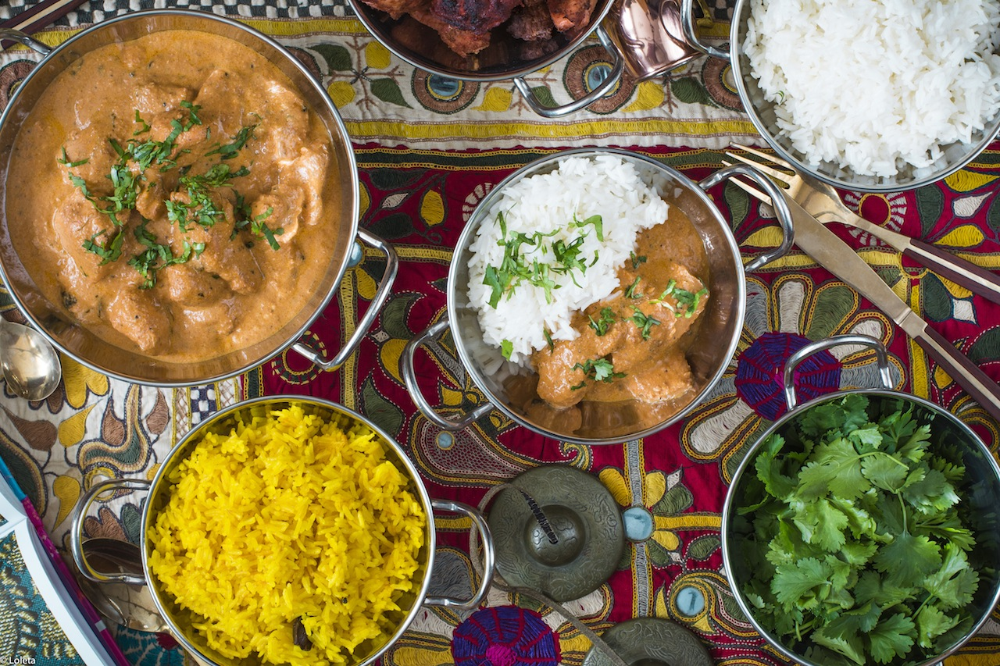
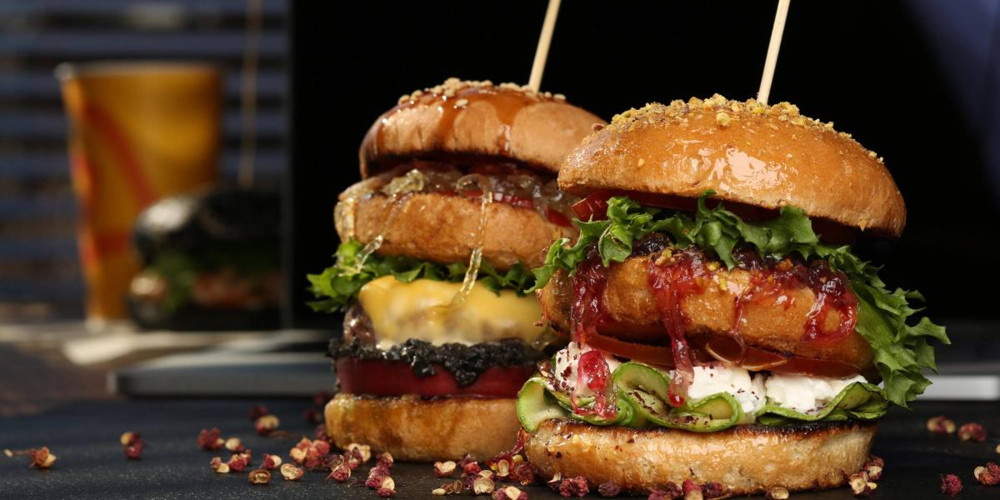
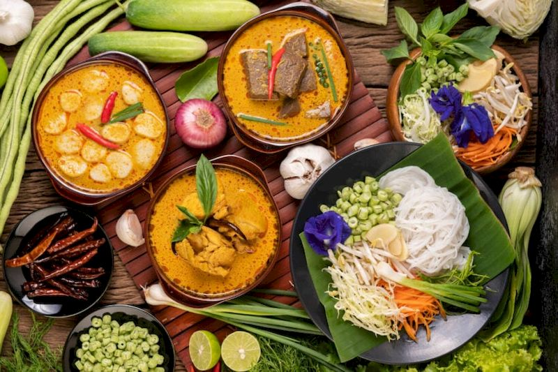
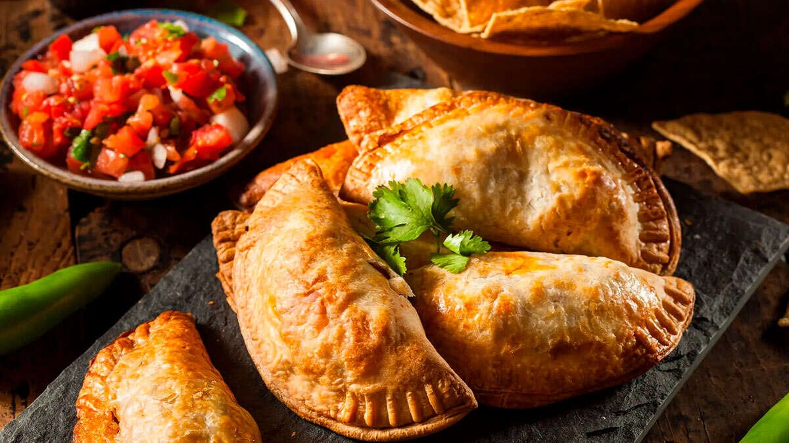

México
Sabores vibrantes con tacos, mole y enchiladas.
Ver más

Japón
Sushi, ramen y mucho más para tu paladar curioso.
Ver más

Italia
Descubre los sabores auténticos de la pasta y el risotto.
Ver más
Francia
Deléitate con croissants, quiches y vinos excepcionales.
Ver más

India
Aromas únicos con curry, naan y masalas.
Ver más

EEUU
Desde hamburguesas hasta barbacoa estilo sureño.
Ver más

Tailandia
Platos exóticos con sabores dulces y picantes.
Ver más

Perú
Explora el ceviche, lomo saltado y más delicias andinas.
Ver más

Argentina
Disfruta asados, empanadas y vinos finos.
Ver más